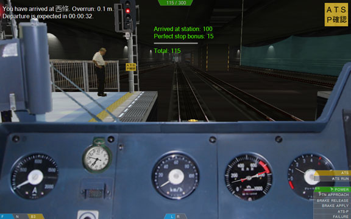

The arcade, normal and expert driving modes
There are three driving modes available which solely affect the interface you are presented with, but are functionally equivalent.
Arcade mode

In Arcade mode, your current score is displayed at the top of the screen. Whenever you are awarded with points, a green
message appears at the top-middle of the screen indicating the event and the points. Likewise, a red
message appears when you are penalized for a particular event. Please also see the page on the scoring system.
When you are within station area, a stop indicator helps you finding the correct stop position. A message appears at the top-left of the screen after a successful station stop, giving the name of the station, the overrun or underrun, and the lateness or earliness. The time until expected departure is also indicated.
When you exceed the current route speed limit or the current signal speed limit, a warning message appears at the top-left of the screen until you are within the speed limit. Additional events that raise messages include passing red signals and not stopping at stations at which you were expected to stop, among others.
So-called marker images might appear at the top-right image of the screen, giving information or advice by the route developer.
If you exit to the main menu, the Review last game page is automatically opened.
Normal mode
This is basically equivalent to the Arcade mode, except that the score is not displayed.
An additional difference is that when you exceed the route or signal speed limits, this is only indicated by a message when you pass the speed post or the signal, but not subsequently. This is mainly intended to remind you of limits that you otherwise missed to notice, but still requires you to memorize these limits subsequently.
If you exit to the main menu, the Start a new game page is shown. You can still open the Review last game page if you are interested in evaluating your performance.
Expert mode
The score is not displayed, nor are markers, stop indicators or messages. Certain features, such as the A.I. driver, are not accessible. This mode is the most demanding mode as it requires you to stop accurate without driving aids, and you have to pay good attention to the timetable. Make more intense use of the timetable via TIMETABLE_TOGGLE (CTRL+T) and the clock via MISC_CLOCK (CTRL+C).
If you exit to the main menu, the Start a new game page is shown. You can still open the Review last game page if you are interested in evaluating your performance.